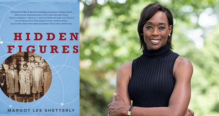
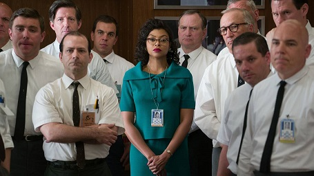
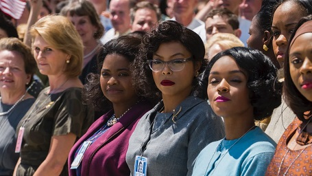

|

|

|
Titolo Originale: Hidden Figures
Lingua Originale: Inglese
Regista: Theodore Melfi
Genere: , Biografico
Anno: 2016
Paese: USA
Durata: 127 min
Data di uscita: 08 marzo 2017
Distribuzione: 20th Century Fox
Sceneggiatura: Theodore Melfi, Allison Schroeder
Fotografia: Mandy Walker
Montaggio: Peter Teschner
 Il diritto di contare (Hidden Figures) è un film statunitense del 2016 diretto da Theodore Melfi che è stato interpretato da un cast di attori spettacolari come Taraji P.Henson, Octavia Spencer e Kevin Costner per nominarne alcuni (clicca qui per vedere il cast al completo). Il film è basato sul libro omonimo di Margot Lee Shetterly (il cui titolo completo è " Hidden Figures: The American Dream and the Untold Story of the Black Women Who Helped Win the Space Race") che iniziò a lavorare al libro nel 2010. La biografia segue la vita di Katherine Johnson, Dorothy Vaughan e Mary Jackson, tre matematiche che hanno lavorato come calcolatrici alla NASA durante la corsa allo spazio. Hanno superato la discriminazione, come donne e come afro-americani. È presente anche Christine Darden, la prima donna afro-americana ad essere promossa nel Senior Executive Service per il suo lavoro di ricerca sul volo supersonico e il boom sonico. Il periodo di tempo in cui ha luogo il racconto va dagli anni '30 agli anni '60. Questo periodo è stato scelto non a caso in quanto proprio in quegli anni il padre di Margot ha lavorato alla Nasa. ««Nel bene o nel male, c’è la storia, c’è il libro e poi c’è il film», ha voluto però dire l’autrice. «I tempi sono stati ridotti e i personaggi uniti. Sarebbe bello che la gente capisse che c’erano molte tante persone in più. Ma capisco che non si può fare un film con 300 personaggi».
Nel 1961, nel pieno della segregazione razziale negli Stati Uniti, la matematica afroamericana Katherine Johnson, insieme a due colleghe anch'esse afroamericane, Dorothy Vaughan (supervisore non ufficiale) e Mary Jackson (aspirante ingegnere), lavorano alla West Area Computers del Langley Research Center di Hampton. A seguito del lancio dei satelliti sovietici e del primo volo spaziale umano eseguito da Jurij Gagarin, il programma spaziale americano sente la necessità di accelerare la corsa allo spazio per lanciare al più presto una capsula pilotata dall'astronauta John Glenn. Vivian Mitchell, donna bianca supervisore di Katherine, la trasferisce allo Space Task Group per assistere la squadra di Al Harrison con le sue capacità nell'ambito matematico e di geometria analitica. Katherine è la prima persona di colore a lavorare nel gruppo e nell'edificio intero, che è dotato di bagni riservati ai soli bianchi: perciò, quando ha bisogno di andare in bagno, è costretta a camminare per quasi un chilometro per accedere all'unica toilette il cui utilizzo è consentito anche ai neri. Katherine svolge il proprio lavoro meglio che può, ma è impossibilitata dalla mancanza di comunicazione che ha con i nuovi colleghi (in particolar modo dall'ingegnere capo Paul Stafford), che la trattano con sufficienza e poco rispetto. Nel frattempo, Vivian rifiuta di promuovere Dorothy come supervisore del settore calcolatrici, anche se lei è costretta a lavorare al posto del supervisore mancante con paga ridotta. Mary invece desidererebbe collaborare con il reparto ingegneria per contribuire a perfezionare gli scudi termici della capsula spaziale. Una domenica, dopo essere stata ad una funzione religiosa con le colleghe, durante un banchetto Katherine incontra l'ufficiale della Guardia  Nazionale Jim Johnson, anch'egli afroamericano. Inizialmente Jim si esprime con lei in maniera indelicata, dicendo di avere dei dubbi sulle capacità matematiche delle donne, ma in seguito riesce a farsi perdonare e ad instaurare con lei un rapporto di profondo affetto, fino a che Katherine, vedova e madre di tre figlie, si fidanza con lui ed accetta di sposarlo successivamente. Nel corso del tempo Katherine riesce a guadagnarsi il rispetto dei colleghi bianchi risolvendo equazioni matematiche molto complesse ed impressionando Harrison. Quando Katherine, in seguito ad un rimprovero per le sue ripetute assenze, esprime il suo fastidio nel doversi allontanare per andare in bagno, Harrison decide di abolire la segregazione all'interno del centro, rendendo i bagni accessibili a tutti e rimuovendo personalmente il cartello che indicava il bagno riservato ai neri. Nonostante le obiezioni di Paul, Harrison permette a Katherine di seguire le loro riunioni riservate, e lei si dimostrerà preziosa per la missione, creando un'elaborata equazione per il rientro della capsula spaziale di Glenn, che dovrebbe compiere sette orbite complete intorno alla Terra. Dorothy intanto viene a sapere che nel centro sta per essere installato un elaboratore IBM 7090, che porterà al licenziamento delle donne adibite ai calcoli che sono sotto la sua supervisione. Così si reca in una locale biblioteca pubblica per informarsi sulla programmazione dei computer e, nonostante venga cacciata in malo modo in quanto il locale è riservato ai bianchi, riesce di nascosto a impossessarsi di un libro sulla programmazione in Fortran. Successivamente entra nella sala computer senza permesso e riuscendo ad attivare la macchina, ma poi viene scoperta ma vista la sua bravura nell'attivare la macchina i colleghi le chiedono di rimanere. Dopo aver capito che, con una macchina che esegue i calcoli  con una tale velocità, non ci potrà più essere alcuna utilità in futuro per le matematiche della sua unità, decide di cominciare ad addestrarle sui processi di programmazione del calcolatore IBM. Con questa attività riesce a farsi promuovere e si trasferisce con le sue sottoposte a supervisionare il computer, guadagnando finalmente il rispetto da parte di Vivian. Per farsi promuovere ingegnere, Mary riesce a ottenere da un giudice il permesso di assistere alle lezioni serali di un liceo frequentato solo da uomini bianchi, in modo da ottenere la specializzazione necessaria per la promozione e riuscendo a contribuire alla creazione della capsula per il volo di John Glenn. Nonostante l'enorme contributo che aveva dato allo Space Task Group, pochi giorni prima del lancio Katherine viene rimandata a lavorare come calcolatrice, in quanto il suo lavoro viene compiuto dal computer IBM, ora totalmente funzionante. Come regalo di nozze e di addio, Harrison e la sua squadra donano a Katherine una collana di perle, l'unico gioiello ammesso nel codice di abbigliamento dell'edificio, che lei, con il misero stipendio che percepiva, non avrebbe mai potuto permettersi. Il giorno del lancio, però, vengono rilevate delle discrepanze tra i calcoli delle coordinate per il rientro svolti a mano e quelli elaborati dal computer IBM. Glenn stesso richiede che Katherine, che si è sposata con Jim alcuni giorni prima, esegua il controllo finale, fidandosi più dei calcoli di una persona (e di Katherine in particolare) che di quelli di una macchina. Katherine riesce a confermare le coordinate in tempo ma, dopo aver portato i dati, inizialmente non viene ammessa ad assistere al lancio; Harrison interviene, le dà un pass e la richiama in sala controllo per seguire il lancio insieme. Dopo essere stata lanciata correttamente ed aver percorso senza problemi tre delle sette orbite previste intorno alla Terra, la capsula di Glenn rileva un guasto allo scudo termico ed il controllo missione dà l'ordine di rientrare. Katherine suggerisce di usare i razzi posteriori attaccati allo scudo per facilitare il rischioso rientro, Glenn segue le istruzioni e riesce con successo a rientrare nell'atmosfera terrestre, con la capsula che atterra nel mare delle Bahamas. Grazie al successo del rientro di Glenn, Katherine continuerà a lavorare per la NASA e in seguito calcolerà anche le traiettorie delle missioni Apollo 11 e Apollo 13.
|
|
|
|
Il diritto di contare racconta la storia vera della matematica, scienziata e fisica afroamericana Katherine Johnson. Essa collaborò con la NASA, e, sfidando il razzismo e discriminazione di genere, contribuì al "un grande passo dell'umanità". Fu lei, assieme a molte altre colleghe per troppo tempo dimenticate dalla storia, ha tracciare le traiettorie per il Programma Mercury e la missione Apollo 11.All'epoca il mondo era diviso in due grandi blocchi. Da una parte il blocco atlantico, guidato dagli Stati Uniti, e dall'altra parte l’Unione Sovietica. I due Stati volevano vincere una guerra a distanza, quella per la "conquista" dello spazio. Tuttavia, al loro interno, questi due colossi, erano ulteriormente divisi e spaccati. Per quanto riguarda gli Usa, la spaccatura più profonda era quella della segregazione razziale. Inoltre la società era alle prese ancora con una tremenda discriminazione di genere. Sebbene tutti gli astronauti e i protagonisti politici della corsa allo spazio fossero uomini, e bianchi, il merito non fu tutto loro. Dietro alla realizzazione e al completamento delle 3 orbite della capsula Friendship 7 ci furono 3 donne. Tutte di colore. Il film Il diritto di contare racconta bene la loro storia vera, nonché troppo spesso dimenticata.